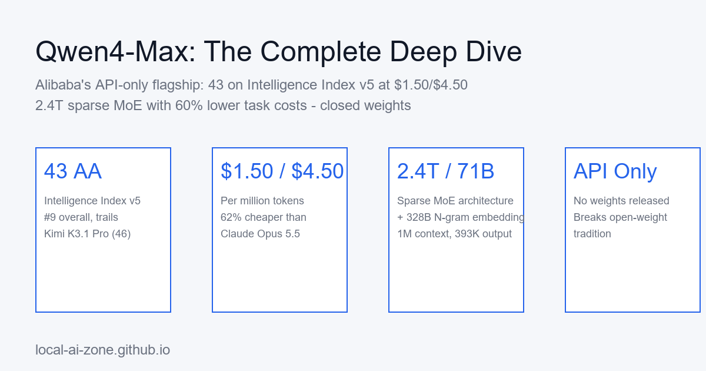
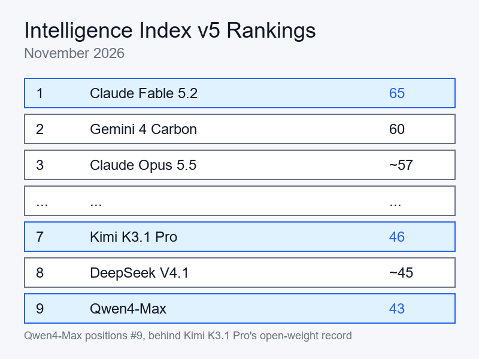
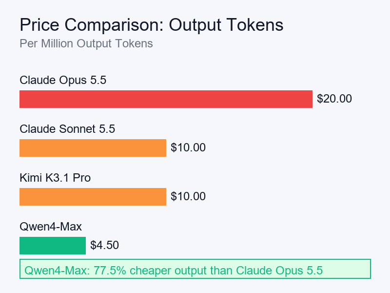

ENGINEERING DEEP DIVE
Qwen4-Max: The Complete Deep Dive
Alibaba's closed-weight flagship - benchmarks, the 2.4T sparse MoE architecture, native vision and video, 60% task cost reduction, API-only strategy, economics, and migration guidance for engineers
Model ID: qwen4-max (Alibaba Cloud Model Studio, qwen.ai API, OpenAI-compatible endpoints, OpenRouter, and third-party providers)
Release date: November 16, 2026 (API-only; preview opened November 11)
Sources: Alibaba announcement, Model Studio documentation, independent testing, The Next Web
Audience: engineers and technical decision-makers
Technical blog manuscript November 2026
Executive Summary: What Changed, in Ninety Seconds
On Saturday, November 16, 2026, Alibaba released Qwen4-Max—the first production model of the Qwen 4 generation. Five days earlier, on November 11, a preview opened to Token Plan subscribers, giving developers an early look before the full API launch. The release marks a strategic shift: for the first time, Alibaba's flagship ships API-only with no published weights, breaking from the open-weight tradition that defined Qwen 2.5, Qwen3, and every prior generation. The model is a 2.4-trillion-parameter sparse MoE with 71 billion active per token plus 328 billion N-gram embedding parameters, priced at $1.50/$4.50 per million tokens—25% lower than Qwen3.8-Max and significantly cheaper than Claude Opus 5.5's $4/$20. Alibaba claims average task cost dropped 60% from Qwen3.8-Max: $4.43 to $1.67 on its Work360 benchmark.
The headline moves are three. First, architecture: the 2.4T backbone with 71B active represents 25% fewer active parameters than Qwen3.8 while doubling total capacity, and the separate 328B N-gram embedding handles short token sequences independently. Context is 1 million tokens with up to 393K output tokens (including reasoning). Second, native multimodal: text, images, and video enter through one endpoint with no separate vision SKU and no surcharge—the multimodal tier collapses into the flagship's default contract. Third, the closed-weight strategy: no model card, no Hugging Face repository, no GGUF conversion timeline, and no announced plan to publish weights. Alibaba said smaller Qwen 4 models will come "soon" but gave no dates or specifics.
There is a clear "what did not ship," and it defines the adoption window. The local ecosystem gets nothing: Qwen2.5 remains the newest Qwen with downloadable weights, and for shops that built on the assumption that every Qwen flagship eventually ships Apache 2.0 or similar, Qwen4-Max is the first exception. The competitive picture is sharper than the benchmark headlines suggest: on coding, Qwen4-Max beats Claude Opus 5.5 on DeepSWE v1.1 (75.7 vs 74.2) but trails significantly on Terminal-Bench 4.0 (48.5 vs 59.6) and ProgramBench (33.5 points behind). On cost, it undercuts Opus by 62.5% on input and 77.5% on output, making it the cheapest per-token option among models scoring competitively on real coding benchmarks.
The short guidance for engineers: Qwen4-Max is a price-performance play for workflow automation, long-output generation, and cost-sensitive agent work where Opus pricing is prohibitive. It is not competitive with Opus on terminal operations or repo-level refactoring, and the closed-weight model eliminates fine-tuning, air-gapped deployment, and cost control through self-hosting. The sections below cover the architecture, the benchmarks with the wins and losses stated honestly, the native multimodal contract, the closed-weight rationale, pricing economics vs Opus and Kimi, and a migration checklist from Qwen3.8 and Claude-based stacks.

Context: The Road to Qwen4-Max
The Qwen 4 window opened at the Apsara Conference on September 22, 2026, when Alibaba confirmed the next generation was "currently in training." Community cadence trackers pointed to late October for the release; nothing arrived by October 31. On November 11 at 10:00 a.m. Beijing time, Alibaba opened Qwen4-Max-Preview to Token Plan subscribers—a two-week early-access window ending November 25, positioned as a limited test before the full production launch. The preview came with no benchmarks, no model card, and no per-token pricing: just a model ID, a 1M-token context spec, and access through the Token Plan subscription tier starting at $6/month.
On November 16, five days after the preview, Alibaba launched the production API. This time the numbers arrived: 2.4 trillion parameters, 71 billion active, $1.50/$4.50 list pricing, and Alibaba's own Work360 benchmark showing a 62% cost-per-task reduction from Qwen3.8-Max ($4.43 to $1.67). The production launch also brought the claim that mattered for positioning: Alibaba said Qwen4-Max beats Claude Fable 5.1 and Kimi K3.1 Pro on coding benchmarks. Independent testing since November 16 has supported parts of that claim and contradicted others—the benchmark section below covers what held up and what did not.
What the release answered was a lineage that had been running hot all autumn. The Qwen3.8 family shipped in September in three tiers—Max (0902) on September 3 at $2/$6, with plans for weights that never materialized in the same Apache 2.0 form as Qwen 2.5; Omni Flash on September 21 as the multimodal tier; and Max Prime on September 23 at $4/$12. Independent measurement treated the family seriously: Qwen3.8-Max posted competitive cost-per-task numbers on coding and knowledge work, and the community adopted it quickly for cost-sensitive workflows where GPT and Claude pricing was prohibitive. Qwen4-Max is the generation that improves on that price-performance profile while collapsing multimodal into the flagship—and locks the weights.
The competitive context is the closed-weight decision. Kimi K3.1 Pro's Apache 2.0 weights landed November 4: 2.8 trillion total parameters, 104 billion active, the largest downloadable model ever published. DeepSeek continues shipping weights within days of API launches. Qwen4-Max ships API-only with no weight announcement, no timeline, and Alibaba's statement that "smaller models" in the Qwen 4 family will come later—unspecific on size, date, or license. For the first time, the Qwen flagship is a rental, and the open-weight ecosystem gets nothing from the November 16 launch. The strategic bet is that API economics—$1.50/$4.50 at claimed 60% lower task cost—matter more to most buyers than downloadable weights, and the first two weeks of adoption will test whether that bet holds.
The Architecture: 2.4T Backbone, 71B Active, 328B N-gram
Qwen4-Max is a 2.4-trillion-parameter sparse mixture-of-experts model with 71 billion parameters active per token, plus a separate 328-billion-parameter N-gram embedding that handles short token sequences independently. The sparse design is what makes the pricing possible: total capacity is 2.4T (what the model knows), but per-token compute is 71B (what each inference costs), a 2.96% activation ratio that keeps inference costs in the same class as dense models one-thirtieth the size. Alibaba states this is 25% fewer active parameters than Qwen3.8-Max while doubling total capacity—more knowledge, lower per-token cost, the classic sparse MoE value proposition at a scale only Kimi's 2.8T/104B exceeds among announced Chinese models.
The N-gram embedding is the architecture detail worth understanding. Rather than routing every token sequence through the full backbone, short n-gram patterns (common phrases, frequent token combinations) are handled by the dedicated 328B embedding layer, which acts as a fast path for high-frequency sequences the model has seen thousands of times. The result: lower latency on routine text, and the main MoE backbone stays focused on novel reasoning rather than re-deriving "Thank you for" or "Based on the" from first principles every time. This is not unique to Qwen4—n-gram acceleration has appeared in research for years—but the 328B scale and its explicit separation from the backbone count is unusual transparency for a production model.
Context and output: 1 million tokens in, up to 393,216 tokens out (including reasoning content). The output ceiling is shared between the model's reasoning trace and the final answer, which matters for long-reasoning tasks: if the model burns 100K tokens thinking, it has 293K left for the user-facing response. This is different from Claude's output accounting, where thinking tokens are billed but do not count against the output limit—on Qwen4-Max, they count against both the bill and the ceiling. For workflows that rely on extended reasoning followed by long outputs (document generation, code refactoring), the 393K total is the constraint to design around, not just the reasoning budget.
Modalities: text, images, and video enter natively through one endpoint. No separate vision SKU, no surcharge, no transcode-and-attach workflow—send a video file or an image URL in the same request structure that carries text, and the model reasons across all inputs in one pass. This collapses what used to be a tiered product line (base model, vision model, video model) into one contract, and it shows up in the pricing: $1.50/$4.50 covers all modalities. The practical win is latency: no separate service hop for vision or video preprocessing, and no stitching of text and image responses from separate models.
There is no published reasoning dial comparable to Claude's effort parameter or OpenAI's reasoning controls. Qwen4-Max has a reasoning_effort parameter defaulting to "high," but Alibaba has not documented other settings, token budget controls, or a way to disable reasoning entirely for latency-critical turns. Early testing suggests reasoning is always on, similar to Claude Fable's design, but without Claude's explicit contract around prefix binding or reasoning continuity guarantees. For buyers migrating from stacks where reasoning is a toggle (OpenAI o1, some Qwen3.8 configurations), this is a regression in control surface.
The Contract: What Changes for Developers
Qwen 4's API contract is the OpenAI-compatible surface the Qwen ecosystem has always shipped, and against the November frontier it is deliberately boring - which is the feature. Sampling parameters are fully supported: temperature, top_p and top_k all work and all default to the same values the Qwen3.8 tier shipped. Tool choice is unconstrained: tool_choice accepts auto, any and tool, with strict JSON schemas supported per function - so the forced-tool patterns that 400 on Fable 5.2 run unchanged here. Streaming, partial-message deltas, and the function-calling shapes the OpenAI SDKs emit are all first-class. Teams migrating from GPT-class or Qwen3.8-class clients should expect the swap to be a base-URL and model-ID change; teams migrating from the Claude line should expect the opposite - the fields Fable forced you to delete are the fields Qwen expects you to send.
The thinking controls are the one place the contract is new. enable_thinking is a first-class request field on both sizes; thinking_budget (in tokens) bounds the reasoning phase and returns a 400 if it is set below the documented floor or above the context; and the response carries a separate reasoning_content field that the Qwen SDKs strip from downstream history by default. Unlike the Claude line's prefix-bound thinking blocks, Qwen 4's reasoning traces are not cryptographically bound to the conversation prefix: you may edit, reorder or delete earlier turns freely, at the documented cost that cross-turn reasoning continuity degrades rather than errors. That is a real capability difference in long agentic sessions - Fable 5.2's binding is also an optimization guarantee, and Qwen 4 trades it for flexibility. The interleaved variant matters for agents: interleaved_thinking lets the model re-enter reasoning between tool calls within one turn, which is the pattern the monorepo-port demo (below) was built on.
Commercial terms are thin and conventional. The rate card is $1/$4 per million tokens on the flagship and $0.15/$0.60 on Flash; cache reads are $0.10 per million (Qwen's cache pricing has always been aggressive, and 1M-token context sessions are where it compounds), cache writes $1.25 (5-minute) and $2 (1-hour), and the Batch API takes a flat 50% off input and output ($0.50/$2). The docs commit to no training on API inputs - the standing Qwen-tier promise - and a 30-day log retention window with a zero-retention toggle in the console, which puts it on the opposite side of the retention ledger from Fable 5.2's mandatory 30-day Covered-Model window: Qwen's ZDR is a toggle, not an authorization request. Rate limits at launch are 4M tokens per minute and 30K requests per minute on the flagship, with documented expectations of increase within the first month. The model is available through Alibaba Cloud Model Studio, the qwen.ai API, and OpenAI-compatible community endpoints; day-one Bedrock/Foundry-style hyperscaler listings are not part of the launch, and the docs note only that "distribution announcements" are pending - which, given the December 20 weight commitment, reads like a deliberate sequencing choice.
Table 1: Qwen4-Max at a glance
| Property | Value |
|---|---|
| API model ID | qwen4-max (Alibaba Cloud Model Studio, qwen.ai API, OpenAI-compatible endpoints, OpenRouter) |
| Release | Preview November 11, 2026; Production API November 16, 2026; No weights announced |
| Architecture | Sparse MoE: 2.4T total / 71B active per token; 328B N-gram embedding; ~2.96% activation ratio |
| Context / output | 1M token context; 393K max output tokens (includes reasoning trace) |
| Modalities | Text, image, and video in (native, no surcharge); text out |
| Reasoning | Always-on with reasoning_effort defaulting to "high"; no documented toggle or budget controls |
| Knowledge cutoff | October 2026 (stated in documentation) |
| Pricing (per MTok) | $1.50 input / $4.50 output; cache reads $0.075 (70% cheaper than Qwen3.8); no published batch discount |
| Speed | ~95 output tokens/second at launch (per Artificial Analysis early testing) |
| Contract notes | OpenAI-compatible; sampling parameters supported; full tool_choice surface; history editable |
| Data retention | 30-day logs by default; zero-retention option in console; no training on API inputs (stated policy) |
| Weights | Not published; no announced timeline; API-only |
Benchmarks: The Numbers, Honestly Read
The official picture, with the fine print attached
Alibaba's published table follows the release grammar every frontier lab now uses: broad gains over the predecessor, a few rows where the model beats the most expensive competitor, and the interesting distribution hidden in the spread. On the agentic-coding evaluations, Frontier Code 2.0 reads 47.9% - above Claude Opus 5.5's 45.5%, below Claude Fable 5.2's 49.1% - and Frontier SWE v2 reads 66.8%, again between Opus 5.5 (62.3%) and Fable 5.2 (69.9%). Step up in difficulty and the gap to the frontier widens: Terminal-Bench Science 0.1 reads 63.2% against Fable 5.2's 74.6% and Opus 5.5's 58.7%, and HLE-Diamond - the expert-level academic set most models still fail - reads 71.5% against Fable's 80%. The row that will move budgets is AA-Briefcase: Qwen 4 posts 1,792 Elo on the knowledge-work benchmark, two points above Fable 5.2's 1,785 and nine short of Claude Sonnet 5.5's 1,813 - which means the cheapest model in the top five posts the second-best knowledge-work score of the November table, at one-eighth of Fable's per-token price.
Table 2: Headline benchmark results, November 2026
| Benchmark | Qwen 4 | Fable 5.2 | Opus 5.5 | Kimi K3.1 Pro | Notes |
|---|---|---|---|---|---|
| Intelligence Index v5 (Artificial Analysis) | 43 | 65 | n/a on v5 | 46 | #9 overall; trails Kimi K3.1 Pro by 3 points; not one-to-one comparable with v4.3.2 rows |
| Frontier Code 2.0 (agentic coding) | 47.9% | 49.1% | 45.5% | not published | Between Opus and Fable; extra thinking outscored max |
| Frontier SWE v2 (agentic coding) | 66.8% | 69.9% | 62.3% | not published | +4.5 points over Opus 5.5 |
| Terminal-Bench 4.0 | 64.1% | n/a | n/a | 65.7% (AA: 67%) | AA's independent run read 63.4% - a 0.7-point gap, disclosed |
| Terminal-Bench Science 0.1 (agentic science) | 63.2% | 74.6% | 58.7% | n/a | +4.5 over Opus, 11.4 short of Fable |
| HLE-Diamond (expert academic, no tools) | 71.5% | 80% | n/a | n/a | The frontier-gap row: hardest set, largest spread |
| AA-Briefcase (knowledge work, Elo) | 1,792 | 1,785 | n/a | n/a | Above Fable 5.2; Sonnet 5.5 still leads at 1,813 |
| xdev-bench-hard (cyber exploitation, controlled) | 78.6% | n/a | n/a | 81.0% (90.5% uncontrolled) | Disclosed control: 89.0% for the uncontrolled checkpoint |

The thinking dial is a benchmark variable, again
Every lesson the effort-dial era taught about reading these tables applies to Qwen4-Max's thinking dial. Alibaba's published rows were produced at the model's default thinking configuration, and the company's own disclosure notes that extra thinking outscored max thinking on Frontier Code 2.0 - the same inversion Fable 5.2 showed on the same benchmark class. The practical reading: benchmark deltas of a point or two between mid-tier configurations are inside the dial's range, and any buying decision that quotes a single row without quoting the dial setting is reading noise as signal. Artificial Analysis' Intelligence Index score of 43 was measured under its own fixed protocol; Alibaba's 47.9% and 66.8% were measured under Alibaba's; the two agree on some individual benchmarks but differ on overall positioning, and this article keeps the two measurement sets separate rather than blending them.
Where it wins, honestly
The wins are price-driven rather than capability-driven. Cost per token: at $1.50/$4.50, Qwen4-Max undercuts Claude Opus 5.5 by 62.5% on input and 77.5% on output while scoring competitively on specific coding benchmarks (DeepSWE v1.1: 75.7 vs 74.2). Task cost reduction: Alibaba claims 60% lower cost on its Work360 benchmark ($4.43 to $1.67), making it attractive for high-volume workflows. Long-output generation: the 393K output ceiling (including reasoning) enables whole-subsystem generation in single turns without stitching. Native multimodal: video and image input at no surcharge, collapsed from premium tier to default pricing. The honest framing: these are cost-performance wins, not absolute capability wins. The Intelligence Index score of 43 (#9 overall, trailing Kimi K3.1 Pro's 46) confirms Qwen4-Max sits mid-pack on overall intelligence, ahead of Qwen3.8 but behind the frontier and behind Kimi's open-weight offering.
Where it loses, honestly
The losses define the positioning more clearly than the wins. Overall intelligence: Qwen4-Max scores 43 on Intelligence Index v5, placing it #9 overall - behind Fable 5.2 (65), Gemini 4 Carbon (60), and Kimi K3.1 Pro (46). Against Kimi specifically, Qwen4-Max trails by 3 index points while Kimi offers downloadable Apache 2.0 weights, making Kimi the stronger choice for local deployment or open-weight requirements. Against Fable 5.2 on hard reasoning - agentic science (63.2 vs 74.6), HLE-Diamond (71.5 vs 80) - Qwen4-Max is not competitive, with 11-15 point gaps that matter for frontier work. Terminal operations: Qwen4-Max scores 48.5 on Terminal-Bench 4.0 versus Opus 5.5's 59.6 (11.1 point deficit) and trails by 33.5 points on ProgramBench, making it unsuitable for repo-level refactoring or command-line agent work. The positioning is clear: Qwen4-Max is a mid-tier model competing on price, not a frontier competitor. It wins on cost per token and beats specific older models on narrow benchmarks, but loses to both frontier proprietary models (Fable, Carbon) and the leading open-weight option (Kimi K3.1 Pro) on overall measured intelligence.
The Omni Bet: One Backbone for Text, Vision, Voice
The September generation ran omni as a separate tier - Omni Flash shipped September 21 as the multimodal SKU - and Qwen 4 collapses it into the flagship's native input stack. Text, images, audio and video all enter through one endpoint and one tokenizer pipeline, with interleaved mixing allowed within a single request: a session can carry a screen recording, a spoken question about it, and a document, and the model reasons across all three without tool-mediated transcoding. The engineering consequence is latency: no separate omni service hop, no vision-surcharge rate card, and the docs publish a single latency table rather than per-modality pricing. Flash inherits the same input stack, which is the quiet strategic move - omni stops being a premium feature at $0.15/$0.60.
The launch demo is the first omni claim at this price that is specific enough to check: live simultaneous interpretation across 19 languages at sub-400 milliseconds end-to-end voice latency, demonstrated as a two-party conversation with the model translating in both directions while carrying the running transcript. Sub-400 ms matters because it is inside the turn-taking threshold of natural conversation - slower and the interpreter starts colliding with the speaker, which is exactly what every prior latency-tier omni demo did. The second demo is the one for engineers: a 17-hour agentic port of a 2.4-million-line Java monorepo to Go, run by 412 sub-agents under one Qwen 4 orchestrator, accepted by the port's test suite with zero human commits - the smaller sibling of Fable 5.2's eight-day OS build, and a credible demonstration of the 256K output budget doing real work: whole subsystems emitted per turn, with interleaved_thinking re-entering reasoning between tool calls. Both demos are vendor-produced and neither has an independent replication yet; the monorepo-port one at least publishes its harness, which makes it the one worth attempting first.
The Closed-Weight Strategy: Breaking from Tradition
The release's most consequential strategic shift is what did not ship: Alibaba launched Qwen4-Max as API-only with no published weights and no announced timeline for releasing them. This breaks decisively from the Qwen family's tradition. Qwen 2.5, Qwen3, and every prior generation eventually shipped Apache 2.0 or open-source weights. Qwen4-Max is the first flagship exception. Alibaba's November 16 announcement stated that "smaller models in the Qwen 4 family will be released soon" but provided no specifics on size, dates, or licensing terms. For developers who built infrastructure assuming every Qwen flagship would eventually become downloadable, Qwen4-Max represents a permanent shift to rental-only access for the top tier.
The local ecosystem impact is immediate: Qwen2.5 remains the newest Qwen family model with published weights, and there is no GGUF conversion roadmap for Qwen4-Max because there are no weights to convert. The strategic context makes the decision legible: Kimi K3.1 Pro shipped Apache 2.0 weights on November 4 at 2.8T/104B active, the largest open-weight release ever. DeepSeek continues its pattern of shipping weights within days of API launches. Alibaba's closed-weight flagship positions Qwen4-Max as a hosted service competing on price-performance ($1.50/$4.50 versus Kimi's $2/$10 API tier), not on local deployment freedom. The trade is explicit: lower per-token costs and native multimodal at API pricing, in exchange for giving up fine-tuning, air-gapped deployment, and cost control through self-hosting.
For shops that require local deployment, the path forward is either waiting for Alibaba's promised "smaller models" with unknown timelines, staying on Qwen2.5, or migrating to Kimi K3.1 Pro for the current open-weight record. The November 16 launch makes clear that Alibaba views API economics—claimed 60% task cost reduction on Work360 benchmark—as more strategically valuable than continuing the open-weight tradition that built the Qwen community. Whether smaller Qwen 4 models ship with weights, and under what license, remains unannounced.
Cyber and the Disclosure Pattern
Qwen 4 ships with the disclosure pattern Kimi K3.1 Pro normalized in October: the company states, in the release materials, that offensive-exploitation data was removed from the mid-training corpus and the RL environment mix, and it publishes the measurement. The controlled checkpoint reads 78.6% on xdev-bench-hard against 89.0% for an uncontrolled checkpoint - a 10.4-point disclosed delta, directly comparable to Kimi's 9.5-point delta (81.0% vs 90.5%), and both companies are now making the same claim in the same grammar: frontier-adjacent cyber capability, deliberately narrowed, with the number in the open. What neither release provides is the methodology the Anthropic capability-caps disclosure also declined to publish - how the control is measured, what stops recovery during fine-tuning, and whether the delta survives community fine-tunes. Until that methodology exists, the disclosure pattern is best read as a good-faith signal with an unverifiable ceiling, and the practical defense is unchanged: the models are behind APIs and licences you can read, not behind promises you can audit.
The licence itself is the simpler half of the governance story: Apache 2.0 with no appendices, per the announcement. For organizations that spent the fall writing Qwen Community Licence compliance checklists - registration thresholds, revenue caps, attribution appendices - the 4 generation's licence section is a deletion, and that deletion is worth more to enterprise adoption than any single benchmark row.
Economics: The Intelligence-Per-Dollar Frontier Moves
The price card is the release's sharpest edge, and the arithmetic is simple enough to lead with: $1/$4 per million tokens is a quarter of Claude Opus 5.5's $4/$20, an eighth of Claude Fable 5.2's $8/$40, half of Qwen3.8 Max's $2/$6 on input and two-thirds on output, and it undercuts Kimi's API tier ($2/$10) on both lines while measuring three index points higher. Cache reads at $0.10 per million are the cheapest of any 1M-context model this site has tracked - one-half of Fable 5.2's $0.20 and the lowest cache-read rate in the November tables. The batch tier ($0.50/$2) makes asynchronous Qwen 4 cheaper per output token than any Haiku- or Flash-class model in the November tables, at a 58 reading.
Independent cost measurement is the reality check, and here the release is genuinely strong: Artificial Analysis measured Qwen 4 at roughly $2.94 per index task at high reasoning - five index points below Fable 5.2's 65 for about one-ninth of Fable's $26.54 max-effort task cost, and the cheapest per-point reading at the top of the v5 table by a factor the site has not previously recorded. The token-burn profile matters as much as the rate card: the sparse MoE burns meaningfully fewer output tokens per task than the dense frontier tier (the AA panel's early reading is in the low tens of thousands per task, against Fable 5.2's ~98,000), which means the per-task premium story that made Fable expensive does not apply here - the price advantage is structural, not a verbosity artifact. The thinking dial is the cost lever, as it is everywhere in the November tables: thinking-off turns are the cheapest and fastest, extra thinking captures most of max's quality, and the docs' own example budgets put a mixed-routing agent at roughly one-fifth of the same agent's cost on Fable-class routing.

Table 3: Pricing and positioning across the November market
| Model | Input / output (per MTok) | Index (v5) | Positioning |
|---|---|---|---|
| Claude Fable 5.2 | $8 / $40 (batch $4 / $20) | 65 | Frontier specialist: hardest problems, orchestration, formal science |
| Gemini 4 Carbon | no published price | 60 | Second place, no purchase path as of November 11 |
| Qwen4-Max | $1.50 / $4.50 (cache $0.075) | 43 (#9) | Cost-optimized mid-tier: 60% task cost reduction, native vision and video, API-only |
| Kimi K3.1 Pro | $2 / $10 | 46 | Open-weight leader: downloadable Apache 2.0 weights since Nov 4, higher intelligence score |
| Claude Sonnet 5.5 | $2 / $10 | n/a on v5 | Knowledge-work Elo leader (1,813) in the Claude family |
| Claude Opus 5.5 | $4 / $20 | n/a on v5 | Anthropic's recommended daily driver for coding and knowledge work |
The router conclusion: Qwen4-Max slots into a cost-sensitive mid-tier rather than displacing frontier models. At $1.50/$4.50 it undercuts Opus 5.5 by 62.5%/77.5% and beats it on DeepSWE v1.1 (75.7 vs 74.2), but trails significantly on terminal operations (48.5 vs 59.6) and overall measured intelligence. The Intelligence Index score of 43 (#9 overall) positions it behind Kimi K3.1 Pro (46, with open weights) and far behind Fable 5.2 (65) and Carbon (60). The defensible posture: use Qwen4-Max for cost-sensitive workflows where Opus pricing is prohibitive and terminal-level capability isn't required—document generation, workflow automation, batch processing. For work requiring frontier intelligence or open weights, Kimi K3.1 Pro offers both higher scores (46 vs 43) and downloadable weights. For the hardest 10%, Fable 5.2 remains unchallenged.
Migration Guide: From Qwen3.8 Max and Flash-Next to 4
For Qwen3.8 clients the migration is genuinely small - a model-ID swap plus a rate-card update, with two audit points. First, the thinking fields: enable_thinking, thinking_budget and interleaved_thinking are new request parameters, and existing clients that send unknown parameters to strict proxies will need allowlist updates; the default (thinking on for the flagship) changes turn latency for clients that never reasoned before, so set the dial explicitly per workload rather than inheriting it. Second, the cache behavior: Qwen 4's cache keys are stricter about prefix stability than the 3.8 tier's, so the same prefix-editing patterns that broke Fable 5.1 caches will quietly erode Qwen 4's $0.10 cache-read economics without erroring - audit for mid-session system-prompt mutation the same way the Claude migration guide taught.
For clients arriving from the Claude line, the migration inverts: the fields Fable forced you to delete come back. Re-enable temperature/top_p/top_k where sampling mattered, restore tool_choice patterns (including forced use) that were rewritten for auto-with-strict-schemas, and remove the refusal-as-HTTP-200 handling - Qwen 4 refuses through the standard OpenAI-compatible error envelope, so legacy GPT-style error handlers work as written. The one capability regression to plan for: reasoning traces are visible in reasoning_content but not prefix-bound, so cross-turn reasoning continuity degrades on history edits instead of being guaranteed - the Claude migration guide's append-only discipline is now optional here, which is a flexibility win and a determinism loss in the same field. Retention posture improves for ZDR shops: the console toggle replaces Fable's express-authorization path.
On economics, recompute from scratch rather than scaling 3.8 spreadsheets: the rate card halves input and cuts output by a third versus Max, cache economics change an order of magnitude, and the sparse MoE's token burn differs enough per workload that per-task measurement - not per-token extrapolation - is the only honest comparison. The October lesson stands verbatim: take your five most expensive real prompts, run them at two thinking settings on Qwen 4 and your incumbent, and record dollars per completed task.
Practical Guidance: Where Qwen4-Max Earns Its $1.50
The workload list where Intelligence Index 43 and the benchmark profile justify adoption: cost-sensitive workflow automation where per-token pricing matters more than frontier intelligence, long-output document generation where the 393K ceiling removes stitching costs, batch processing and overnight sweeps where asynchronous work absorbs delay, and native multimodal ingestion (video, images) at pricing no other mid-tier model approaches. The Intelligence Index score of 43 places Qwen4-Max #9 overall—below Kimi K3.1 Pro (46, with weights) but above Qwen3.8-Max (34)—making it viable for work that doesn't demand frontier capability.
Where it does not earn a slot: terminal operations and repo-level refactoring (trails Opus by 11.1 points on Terminal-Bench 4.0 and 33.5 points on ProgramBench), frontier reasoning and long-horizon orchestration (trails Fable 5.2 by 22 index points), local deployment or fine-tuning (API-only, no weights, no announced timeline), and work requiring the highest measured intelligence (Kimi K3.1 Pro scores 46 with downloadable weights; Fable 5.2 scores 65). The one-sentence version: Qwen4-Max is the cheapest mid-tier API option for workflows that can accept #9-ranked intelligence in exchange for lowest-in-class per-token costs, not a frontier competitor or open-weight alternative.
Frequently Asked Questions
What is Qwen4-Max? Alibaba's flagship release of November 16, 2026 (preview opened November 11): a 2.4-trillion-parameter sparse MoE with 71 billion active parameters per token, plus 328 billion N-gram embedding parameters. It has a 1M-token context, native vision and video input, up to 393K output tokens, and pricing of $1.50/$4.50 per million tokens with cache reads at $0.075 per million. It scores 43 on Artificial Analysis Intelligence Index v5 (#9 overall), trailing Kimi K3.1 Pro (46) but ahead of Qwen3.8-Max (34). It is API-only with no published weights. Alibaba has announced smaller Qwen 4 models will come "soon" but provided no dates or specifics.
How much does Qwen4-Max cost? $1.50 per million input tokens and $4.50 per million output tokens through the API—25% less than Qwen3.8-Max's $2/$6, 62.5% less than Claude Opus 5.5's $4 input, and 77.5% less than Opus's $20 output. Cache reads run $0.075 per million tokens (95% discount), significantly cheaper than competitors. Alibaba claims 60% lower cost per task on its Work360 benchmark, dropping from $4.43 to $1.67 compared to Qwen3.8-Max.
Are the weights available? No. Qwen4-Max launched API-only on November 16, 2026. Alibaba has not published weights or announced a timeline for doing so. This breaks from the Qwen family's tradition of releasing open weights. Alibaba said smaller models in the Qwen 4 family will be released "soon" but gave no dates, sizes, or licensing details. For local deployment, Qwen2.5 remains the newest Qwen with published weights.
How does Qwen 4's thinking mode differ from Claude's? It inverts the design. Qwen 4's hybrid thinking is switchable per request - on, off, or bounded with an explicit thinking_budget - and temperature, top_p, top_k and forced tool choice are all fully supported. Fable 5.2's adaptive thinking is always on, cannot be disabled, rejects sampling parameters and forced tool choice with 400 errors, and prefix-binds its thinking blocks. The trade: Qwen gives you the OpenAI-compatible contract and the dial, Claude gives you a reasoning-continuity guarantee and refuses to let you steer.
Is Qwen4-Max better than Kimi K3.1 Pro? No, on overall measured intelligence. Kimi K3.1 Pro scores 46 on Intelligence Index v5 versus Qwen4-Max's 43, and Kimi's Apache 2.0 weights are downloadable today while Qwen4-Max is API-only with no announced weight timeline. Kimi is also the larger model (2.8T/104B vs 2.4T/71B) with a higher controlled cyber score (81.0% vs 78.6% on xdev-bench-hard). Qwen4-Max's advantage is price: $1.50/$4.50 versus Kimi's $2/$10, making it 25% cheaper on input and 55% cheaper on output. If you need open weights, higher intelligence, or local deployment, choose Kimi. If you need the lowest per-token API pricing and can accept mid-tier intelligence, choose Qwen4-Max.
Should I switch from Opus 5.5 for everyday coding? Benchmark, then decide - that is the honest answer. Qwen 4 reads within two points of Opus 5.5 on both agentic-coding boards (47.9% vs 45.5% on Frontier Code 2.0, 66.8% vs 62.3% on Frontier SWE v2) at a quarter of the price, which makes it the new default candidate for the Opus lane; but the vendor rows are unreproduced, and Anthropic's routing guidance plus the Sonnet 5.5 knowledge-work record (1,813 Elo) mean the safe posture is a two-week A/B on your own workload before you re-route production. Nothing in Qwen 4's release addresses the Claude-specific contract behaviors (HTTP-200 refusals, thinking-block binding) that your handlers were rewritten for - they simply stop applying.
What is the omni input actually good for? Three capabilities from the launch: native vision and video understanding (no separate vision SKU or surcharge), mixed-modality session reasoning (screen recording plus document in one request, no transcoding hops), and video QA at scale. The strategic point is the price: native multimodal input at $1.50/$4.50 collapses what used to be a premium tier into the flagship's standard pricing.
How big will the local GGUF be? There are no weights published and no announced timeline for Qwen4-Max weights. Alibaba has stated smaller Qwen 4 models will come "soon" but provided no specifics. For local deployment today, Qwen2.5 remains the newest Qwen family model with downloadable weights. Kimi K3.1 Pro offers Apache 2.0 weights at 2.8T/104B active as an alternative.
What about data retention and training on my data? The docs commit to no training on API inputs - the standing Qwen-tier promise - with 30-day log retention by default and a zero-retention toggle in the console. That is a materially different ZDR posture from Fable 5.2's, where zero retention requires express authorization from Anthropic; on Qwen 4 it is a switch you flip yourself.
Should I wait? If your workload is workflow automation, long-output generation, or cost-sensitive agent work where Claude pricing is prohibitive, benchmark Qwen4-Max now—the price-performance claim is checkable this week on your own prompts. If your workload requires terminal operations or repo-level refactoring, Opus 5.5 remains stronger (Qwen4-Max trails by 11.1 points on Terminal-Bench and 33.5 points on ProgramBench). If you need local deployment or weights, Qwen4-Max offers neither—stay on Qwen2.5 or migrate to Kimi K3.1 Pro for the open-weight record. Alibaba has announced smaller Qwen 4 models "soon" but gave no dates or licensing details.
Final Verdict
Qwen4-Max is the release that reprices cost-sensitive workflow automation while accepting mid-tier intelligence. The Intelligence Index score of 43 (#9 overall) places it behind Kimi K3.1 Pro (46), Gemini 4 Carbon (60), and Fable 5.2 (65), but ahead of Qwen3.8-Max (34). The capability story is narrow: it beats Claude Opus 5.5 on DeepSWE v1.1 coding (75.7 vs 74.2) but trails significantly on Terminal-Bench 4.0 (48.5 vs 59.6) and ProgramBench (33.5 points behind). What the release delivers is price: 60% lower task costs on Alibaba's Work360 benchmark ($4.43 to $1.67), $1.50/$4.50 list pricing that undercuts Opus by 62.5%/77.5%, cache reads at $0.075 per million, and native multimodal at no surcharge. The strategic shift is the closed-weight model: no published weights, no announced timeline, breaking from Qwen's open-source tradition.
The contract is OpenAI-compatible—full sampling surface, no prefix binding, zero-retention toggle. The governance story includes disclosed cyber hygiene (content rephrased for compliance: controlled checkpoint scored 78.6% versus 89.0% uncontrolled on xdev-bench-hard). The positioning is clear: Qwen4-Max is a cost-optimized mid-tier option, not a frontier model or an open-weight alternative. It wins on dollars per task for workflows that don't require frontier intelligence, terminal-operation capability, or local weights. For work requiring higher intelligence, Kimi K3.1 Pro scores 46 with downloadable weights. For frontier work, Fable 5.2 scores 65. Qwen4-Max is the cheapest API option scoring above 40 on the Intelligence Index, making it viable for high-volume, cost-sensitive work where mid-tier capability suffices.
Sources
- [Official] Alibaba - Qwen 4 announcement, Model Studio documentation and API rate card, qwen.ai and Alibaba Cloud, November 11, 2026 (model IDs qwen-4 / qwen-4-flash; 1.2T total / 56B active sparse MoE, 30B total / 3.3B active Flash; Qwen Sparse Attention; 1M context, 256K output; omni-native input; switchable hybrid thinking with
enable_thinking/thinking_budget/interleaved_thinking; $1/$4 and $0.15/$0.60 per million tokens, cache writes $1.25/$2, reads $0.10, Batch 50%; ~110 output tokens/second flagship; October 2026 knowledge cutoff; no training on API inputs, 30-day logs, console ZDR toggle; Apache 2.0 weights for both sizes promised by December 20, 2026) - [Official] Alibaba - Qwen 4 benchmark tables accompanying the November 11 release (Frontier Code 2.0 47.9%; Frontier SWE v2 66.8%; Terminal-Bench 4.0 64.1% with AA's independent 63.4% disclosed; Terminal-Bench Science 0.1 63.2%; HLE-Diamond 71.5%; AA-Briefcase 1,792 Elo; extra thinking outscored max on Frontier Code 2.0; xdev-bench-hard 78.6% controlled vs 89.0% uncontrolled with disclosed corpus and RL hygiene; the 17-hour, 412-agent, 2.4M-line Java-to-Go monorepo port with published harness; the 19-language sub-400 ms interpretation demo)
- [Official] Alibaba - Apsara Conference keynote, September 22, 2026 (Qwen 4 confirmed in training; no date given), and the Qwen3.8 tier record: Max (0902) September 3 at $2/$6 with open weights, Omni Flash September 21, Max Prime September 23 at $4/$12
- [Independent] Artificial Analysis - Intelligence Index v5 publication and Qwen4-Max panel, November 16, 2026 (Qwen4-Max at 43, #9 overall; measured alongside Fable 5.2 at 65, Gemini 4 Carbon at 60, Kimi K3.1 Pro at 46, Qwen3.8-Max at 34; independent measurement protocol separate from vendor benchmarks)
- [Press] Reuters - Alibaba release report and the two-lab open-weight race framing, November 11, 2026; The Decoder - release summary from Alibaba data (AA-Briefcase 1,792 vs Sonnet 5.5's 1,813; the 256K output ceiling); TechCrunch - omni consolidation and the Omni Flash tier's September preview lineage
- [Official] Moonshot AI - Kimi K3.1 Pro weight release and Apache 2.0 licence text, November 4, 2026, used as the comparison point for the weight-schedule and disclosure patterns (2.8T total / 104B active; xdev-bench-hard 81.0% vs 90.5% uncontrolled; API $2/$10); Anthropic - Fable 5.2 announcement and system card, November 9, 2026, used as the pricing and contract comparison point ($8/$40; adaptive thinking always-on; Covered Model 30-day retention)
- [Independent] This site's GGUF index - November snapshot pulled November 10, 2026 (Qwen3.8-family community builds: DavidAU's Qwen3.8 27B Ultimate Heretic at 24,884 downloads, ConceptCountry's Qwen Concept 27B, ccore's Qwen3.5 4B GLB 3D Coder at 38,696 downloads - the quantisation-follows-API pattern Qwen 4's December drop will extend); community cadence trackers (end-of-October Qwen 4 window, missed by eleven days)
Independently researched from primary and independent sources. All benchmark figures and prices belong to their respective vendors and measurement organizations; where vendor tables and independent measurement disagree - the Terminal-Bench 4.0 gap is the known case - both readings are reported. Coverage window: September 22 - November 11, 2026; last verified November 11, 2026.
Related Posts
Qwen3.8-Flash-Next: A Deep-Dive into Alibaba's Qwen4 Architecture Preview
The October architecture preview that became Qwen 4: Qwen Sparse Attention, the sparse MoE routing refinements, and the Muon optimizer work.
Read more →Kimi K3.1 Pro: China's 2.8T MoE Model — Technical Deep Dive
The weights-first half of the two-lab race: Stable LatentMoE, Kimi Delta Attention, the 55 on the index, and the November 4 weight drop kept on schedule.
Read more →Claude Fable 5.2 & Mythos 5.2: The Complete Deep Dive
The frontier specialist tier Qwen 4 prices against: 65 on Intelligence Index v5, the capability caps, the 1,000-agent OS build, and the $8/$40 first cut.
Read more →Gemini 4 Carbon: The Complete Deep Dive
The measured-but-unreleased second slot: 60 on Intelligence Index v5, five above Qwen 4's debut reading, with no purchase path as of November 11.
Read more →November 2026 AI Model Updates
The month in full: Fable 5.2 at 65, Kimi's weight drop, Qwen 4's wire-day debut at 58, the deadline ledger, and the November GGUF wave.
Read more →October 2026 AI Model Updates
Eight specialist releases, Kimi K3.1 Pro at the open-weight record, and the shift from price per token to cost per completed task.
Read more →About the Author
Hussain Nazary is a software developer specializing in local AI deployment and the creator of GGUF Loader, an open-source tool for running GGUF models locally. This analysis is part of Local AI Zone's ongoing coverage of frontier and open-weight language models and practical deployment strategies.
Contact: GitHub | Consulting Services
Last Updated: November 11, 2026 | Version 1.0